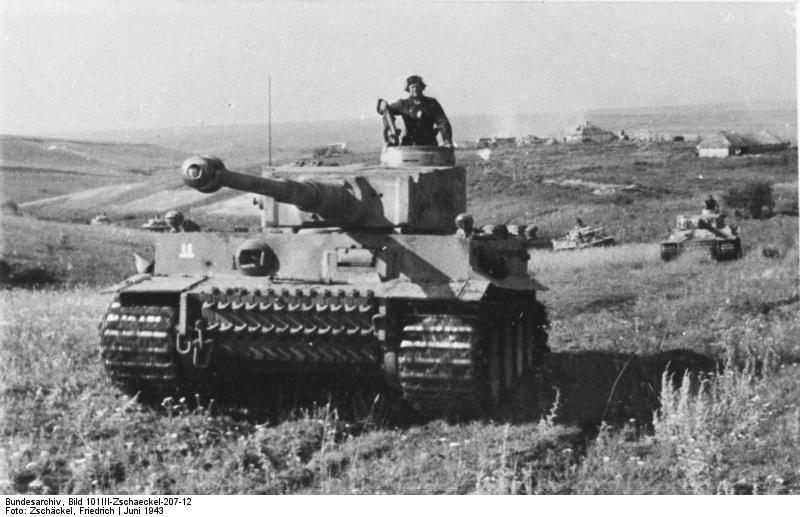

Geschichte des Tiger Panzers
Der Tiger Panzer war ein schwerer Panzer aus dem zweiten Weltkrieg. er wurde von Deutschland entwickelt und war für seine starke Panzerung und überweltigende Feuerkraft bekannt. Es gab zwei Modelle des Tiegers. Das erste Modell war der H1 und das zweite Modell war der Teiger E. Der Tieger E hatte den Undterschied einer niedrigeren Komandantenluke und einem Granatwerfer der in der Turmdecke integriert war. Der Granatwerfer konnte sowol Mörsergranaten als auch Rauchkatuschen schießen.
Tiger Panzer Bild

Technische Infos
- Gewicht: ca. 57 Tonnen
- Bewaffnung: 88 mm kwk36 L/56 kanone
- Einsatzzeit: 1942 bis 1945
- Besatzung: 5 man bestehend aus fahrer, Funker/mg schütze, Ladeschütze, Richtschütze und Komandant